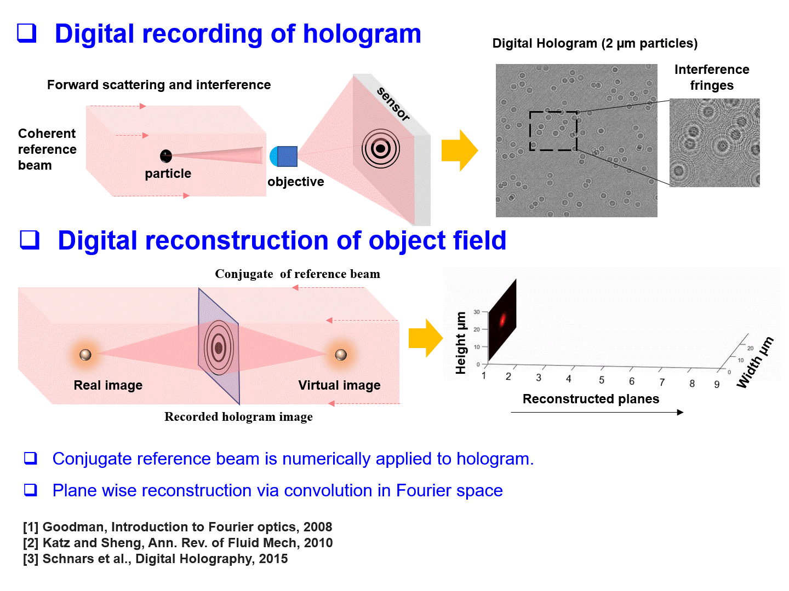
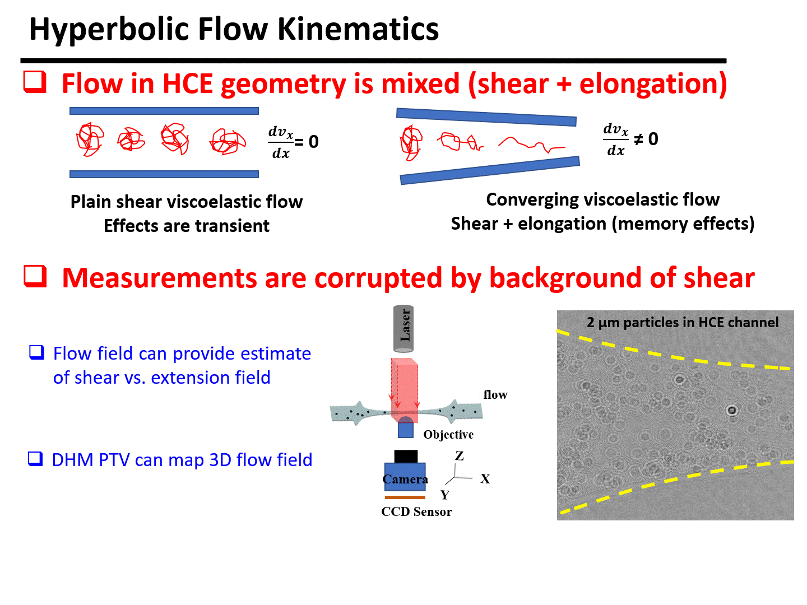

Digital Holography
Digital holography: Rapid analysis of particle fields using volumetric information. Implemented millisecond-scale reconstruction using HPC.

PepsiCo Research
Holography can investigate extension in human saliva flows. Shown above are hyperbolic, serpentine, and linear flows as part of the PepsiCo study.